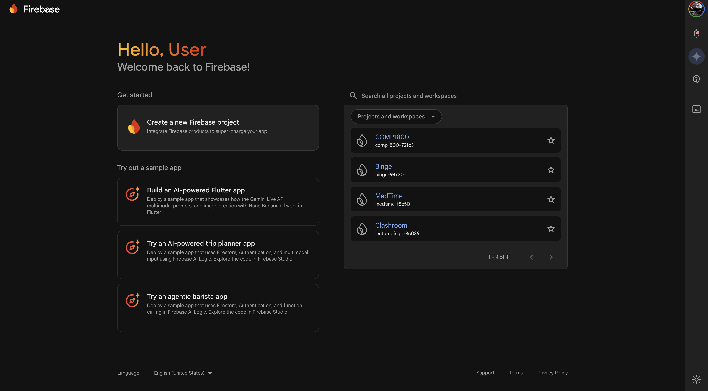
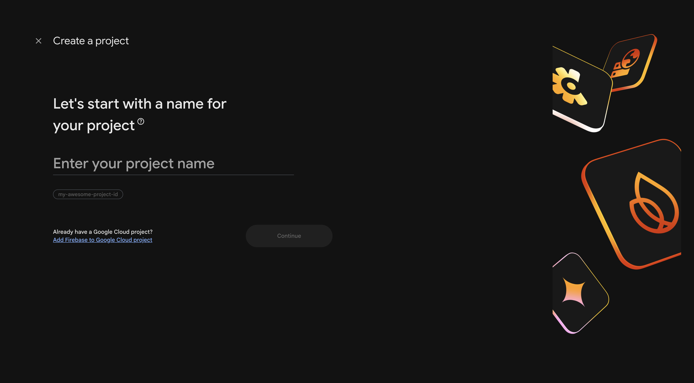
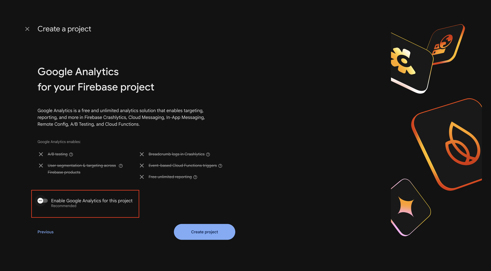
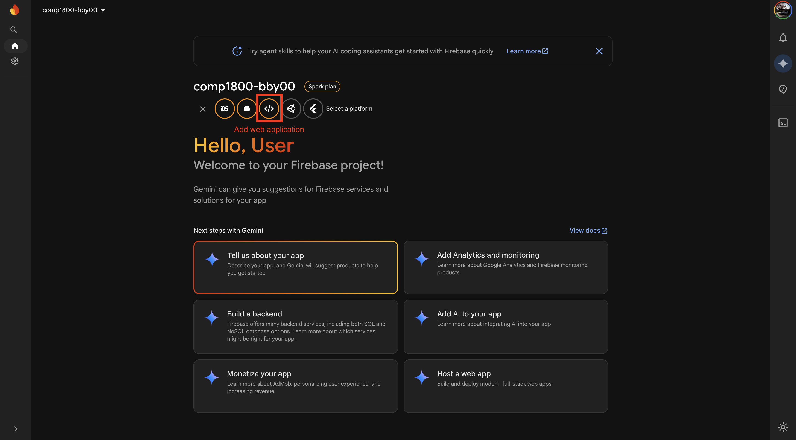
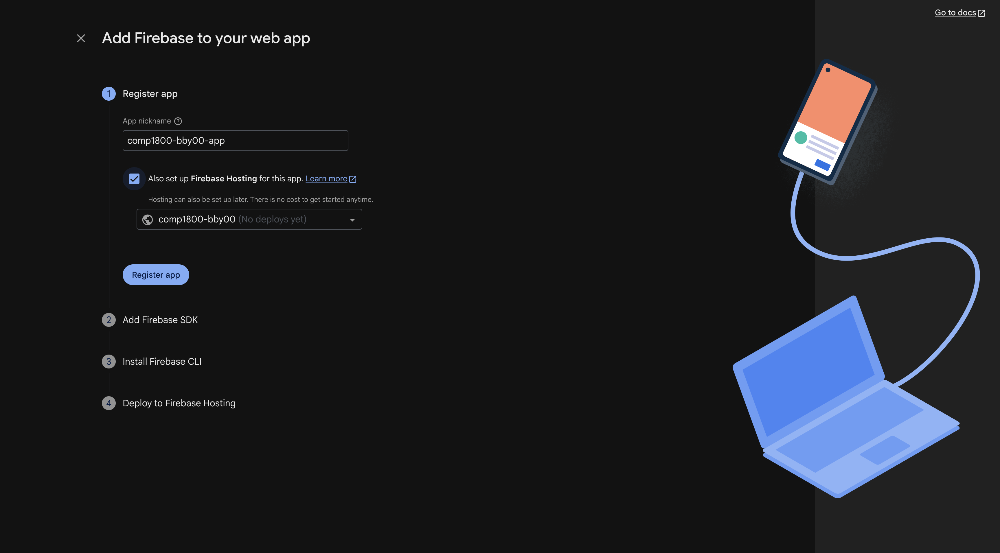
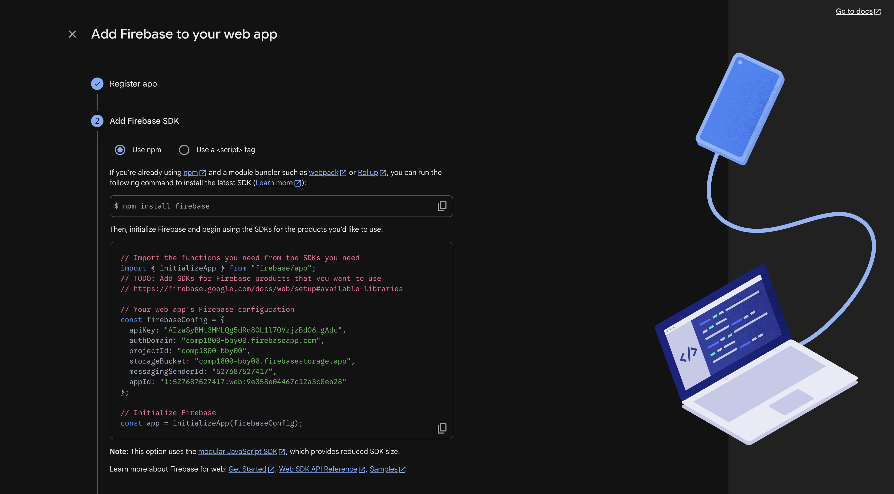
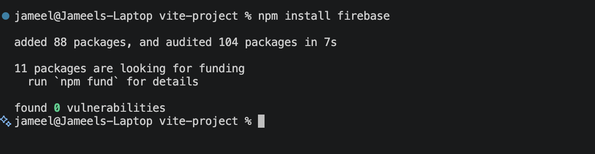
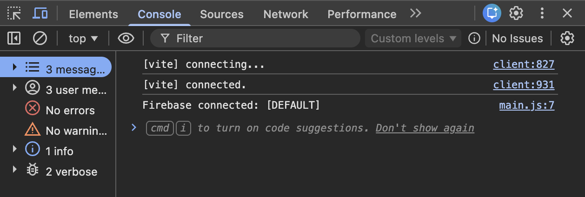

Setting Up Firebase
Overview
This section walks you through creating a Firebase project, registering your web app, and connecting Firebase to your COMP 1800 project files. By the end of this page, your local project will be linked to Firebase and ready for additional services like Cloud Firestore and Authentication.
One-Time Setup
This process only needs to be done once per project. Once Firebase is connected, all team members can use the same project by sharing the configuration file.
Creating a Firebase Project
A Firebase project is a container that holds all the Firebase services (hosting, database, authentication) for your application. You will create one project for your entire COMP 1800 team.
-
Open your browser and navigate to the Firebase Console at:
-
Sign in with your Google account.
First-Time View
The Firebase Console dashboard should appear. If this is your first time, the page may be mostly empty.

Figure 1: The Firebase Console dashboard. -
Click [Add project].
The "Create a project" wizard opens with Step 1 of 3.

Figure 2: The Create a project wizard - entering a project name. -
Enter a project name (e.g.,
comp1800-bby00where00is your team number).Project ID Suffix
Firebase may append a random string of characters to your project name to create a unique project ID (e.g.,
comp1800-bby00-a1b2c). This is normal and expected. -
Click [Continue].
-
On the Google Analytics screen, toggle off the "Enable Google Analytics for this project" switch.
Google Analytics
Google Analytics is not required for COMP 1800. Disabling it simplifies the setup. You can always enable it later from your project settings.

Figure 3: Disabling Google Analytics. -
Click [Create project].
Firebase takes a moment to provision your project. A loading animation appears.
-
Click [Continue] when the "Your new project is ready" message appears.
You should now see your Firebase project dashboard.
Project Created
You have successfully created a Firebase project. The project dashboard should now be visible with your project name at the top left.
Registering a Web App
Now that your Firebase project exists, you need to register your COMP 1800 project as a web app within Firebase. This generates the API key and configuration values that connect your code to Firebase services.
-
From the project dashboard, click the web icon (
</>) in the center of the page under "Get started by adding Firebase to your app."
Figure 4: Selecting the web platform icon. -
Enter a nickname for your app (e.g.,
comp1800-bby00-app).This nickname is only used within the Firebase Console to identify your app. It is not visible to users.
-
Check the box labelled "Also set up Firebase Hosting for this app."
Firebase Hosting
Checking this box now saves you a step later when you deploy your project in Task 4. Firebase Hosting is the service that makes your project accessible as a live website.

Figure 5: Registering your web app with Firebase Hosting enabled. -
Click [Register app].
Firebase now displays a code block titled "Add Firebase SDK." This contains your unique Firebase configuration.

Figure 6: Your Firebase configuration code block. -
Copy the entire code block shown on your screen. You will need this in the next section.
API Key Security
Do not share your Firebase configuration keys in a public GitHub repository without proper
.gitignoreprotection. While these keys are not passwords, exposing them without security rules can allow unauthorized access to your Firebase services. -
Click [Continue to console].
App Registered
You have registered your web app. Firebase has generated your unique configuration keys.
Adding Firebase to Your Project
With your configuration keys ready, you can now install the Firebase SDK and connect it to your COMP 1800 project. Since your project uses Vite, you will install Firebase as an npm package and use import statements rather than <script> tags.
Installing Firebase via npm
-
Open the integrated terminal in VS Code:
Press Ctrl+`.
Press Cmd+`.
-
Confirm your terminal is inside your COMP 1800 project folder. The folder name should appear in the terminal prompt.
Wrong Folder
If you are not in the correct folder, type
cdfollowed by the path to your project folder and press Enter. -
Type the following command and press Enter:
npm downloads the Firebase SDK and adds it to your
node_modules/folder. You will see a confirmation message when the installation is complete.
Figure 7: Successful Firebase npm installation.
Creating the Firebase Configuration File
-
Create a new file at
src/firebaseConfig.js.File Location
Your COMP 1800 Vite project stores JavaScript source files in the
src/folder. All Firebase modules will import from this single configuration file. -
Paste the following code into
src/firebaseConfig.js, replacing the placeholder values with the configuration you copied earlier:// src/firebaseConfig.js import { initializeApp } from "firebase/app"; import { getFirestore } from "firebase/firestore"; import { getAuth } from "firebase/auth"; const firebaseConfig = { apiKey: "YOUR_API_KEY", authDomain: "YOUR_PROJECT_ID.firebaseapp.com", projectId: "YOUR_PROJECT_ID", storageBucket: "YOUR_PROJECT_ID.appspot.com", messagingSenderId: "YOUR_SENDER_ID", appId: "YOUR_APP_ID" }; const app = initializeApp(firebaseConfig); export const db = getFirestore(app); export const auth = getAuth(app);This file initializes Firebase once and exports the
db(Firestore) andauth(Authentication) instances. Every other file in your project will import from here rather than callinginitializeAppagain.Replace Placeholders
Make sure you replace every
YOUR_...placeholder with the actual values from your Firebase configuration. If any value is missing or incorrect, Firebase will not connect. You can find your values again in the Firebase Console under [Project Settings] → [Your apps] → [SDK setup and configuration]. See Troubleshooting if you encounter errors. -
Save
src/firebaseConfig.js.
Verifying the Connection
-
Open your
src/main.jsfile (or whichever script is loaded by yourindex.html). -
Add the following temporary import at the top of the file:
-
Save the file.
-
Start the Vite development server by running the following in your terminal:
Vite should print a local URL such as
http://localhost:5173. -
Open the URL in Google Chrome.
-
Open the browser developer console:
Press F12 or Ctrl+Shift+J.
Press Cmd+Option+J.
The console should print
Firebase connected: [DEFAULT]. This confirms Firebase has been initialized successfully.
Figure 8: Successful Firebase connection — the console prints "[DEFAULT]". -
Remove the two temporary lines you added to
src/main.js(theimportandconsole.log). -
Save the file.
Firebase Connected
Your Firebase project is now connected to your COMP 1800 project. If the console printed Firebase connected: [DEFAULT], Firebase is properly initialized. You are now ready to proceed to Setting Up Firestore.
Conclusion
In this section, you:
- Created a new Firebase project in the Firebase Console
- Registered your COMP 1800 project as a Firebase web app
- Installed the Firebase SDK via npm and created
src/firebaseConfig.js - Verified the connection using Vite and the browser developer console
If the console printed Firebase connected: [DEFAULT] in the verification step, everything is working correctly. If you see errors instead, refer to the Troubleshooting page.